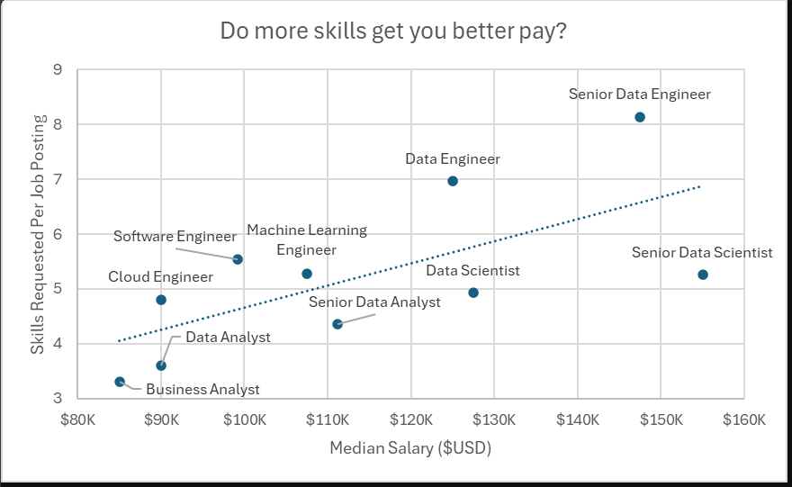

Medical imaging meets deep learning — this project implements a U-Net-based
semantic segmentation model to automatically detect and segment colorectal polyps
in colonoscopy images using Tensorflow. Accurate segmentation can assist doctors in early diagnosis,
treatment planning, and reduce the chances of missed polyps.
.png)
This project explores the factors influencing maternal mortality in Sub-Saharan Africa, using SQL for data transformation and analysis and Tableau for interactive visualizations.

This project demonstrates how to create a dynamic and interactive Emergency Room (ER) dashboard using Tableau. The dashboard provides real-time insights into key performance indicators (KPIs) crucial for hospital management and patient care.

Welcome to the data job market analysis, focusing on Data Scientist roles, in this project i explored top paying jobs, indemand skills and where high demand meets high salary in Data Science.
In this project i develop and train a model that predicts restaurant rating with high accuracy.

Data Lovers! , This repository contains my projects showcasing all my excel skills for data analytics from cleaning to dashboard creation.

In this project i reimplement the AlexNet model from scratch using Tensorflow.